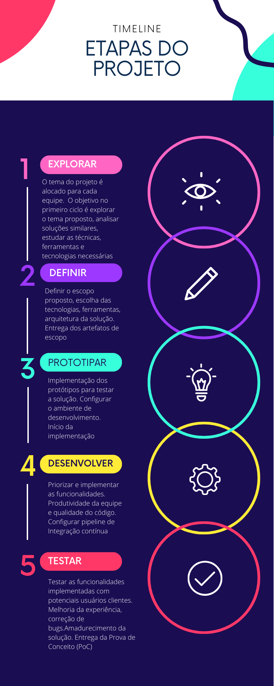

Metodologia Proposta
Ideia Principal
O principal foco da Metodologia Proposta é guiar os membros em um processo de auto aprendizado além da mentoria/liderança serem crucial para o compartilhamento de práticas e cultura organizacionais
A principal ideia por trás da metodologia proposta é utilizar o ciclo de onboarding e os princípios e práticas de aprendizagem baseada em experiência, a fim de aplicá-los em um ciclo de desenvolvimento de software que atenda aos padrões adotados pelas comunidades de software livre. Essa abordagem não apenas aumenta a eficiência e qualidade do projeto, mas também incentiva o desenvolvimento de habilidades e conhecimentos dos membros da equipe, promovendo um ambiente de trabalho colaborativo e produtivo.
Aprendizagem orientada a experiência e aprendizagem orientada a projetos são abordagens cada vez mais utilizadas na área de engenharia de software e métodos ágeis. Essas abordagens colocam o estudante/participante no centro do processo de aprendizagem, permitindo que ele vivencie situações reais e desafiadoras de desenvolvimento de software. Quando combinadas com o desenvolvimento de um projeto open source e padrões de comunidades open source, essas abordagens oferecem ainda mais benefícios para a formação dos estudantes.
A aprendizagem orientada a projetos desafia os estudantes a resolver problemas reais, por meio da criação de projetos significativos e desafiadores. Ao criar projetos, os estudantes são capazes de aplicar as habilidades e conhecimentos adquiridos em situações práticas, trabalhar em equipe, desenvolver habilidades de gerenciamento de projetos e aprimorar a capacidade de comunicação, que são habilidades essenciais na área de engenharia de software.
Ao combinar a aprendizagem orientada a experiência e a aprendizagem orientada a projetos com o desenvolvimento de um projeto open source, as equipes podem trabalhar em um projeto real, com uma comunidade de desenvolvedores que oferece suporte e feedback constante. Eles podem contribuir com código, documentação, testes e outras atividades relacionadas ao desenvolvimento de software, o que proporciona um ambiente de aprendizado ainda mais realista e desafiador.

Cada etapa do processo de onboarding tem seus próprios objetivos, que incluem:
- Boas-vindas: criar um ambiente acolhedor e encorajador para o novo colaborador.
- Introdução: ajudar o novo colaborador a entender a cultura da empresa e se familiarizar com o ambiente de trabalho.
- Treinamento: capacitar o novo colaborador para desempenhar suas funções.
- Acompanhamento: oferecer suporte e orientação ao novo colaborador para garantir uma transição tranquila.